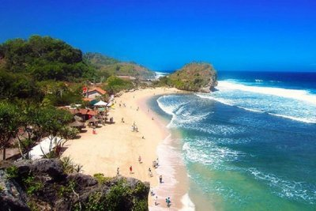

Sejarah Indrayanti Terletak di sebelah timur Pantai Sundak, pantai yang dibatasi bukit karang ini merupakan salah satu pantai yang menyajikan pemandangan berbeda dibandingkan pantai-pantai lain yang ada di Gunungkidul. Tidak hanya berhiaskan pasir putih, bukit karang, dan air biru jernih yang seolah memanggil-manggil wisatawan untuk menceburkan diri ke dalamnya, Pantai Indrayanti juga dilengkapi restoran dan cafe serta deretan penginapan yang akan memanjakan wisatawan. Beragam menu mulai dari hidangan laut hingga nasi goreng bisa di pesan di restoran yang menghadap ke pantai ini. Pada malam hari, gazebo-gazebo yang ada di bibir pantai akan terlihat cantik karena diterangi kerlip sinar lampu. Menikmati makan malam di cafe ini ditemani desau angin dan alunan debur ombak akan menjadi pengalaman romantis yang tak terlupa. Penyebutan nama Pantai Indrayanti sebelumnya menuai banyak kontraversi. Indrayanti bukanlah nama pantai, melainkan nama pemilik cafe dan restoran. Berhubung nama Indrayanti yang terpampang di papan nama cafe dan restoran pantai, akhirnya masyarakat menyebut pantai ini dengan nama Pantai Indrayanti. Sedangkan pemerintah menamai pantai ini dengan nama Pantai Pulang Syawal. |
Alamat yang bisa dituju : |
| Pantai Indrayanti |